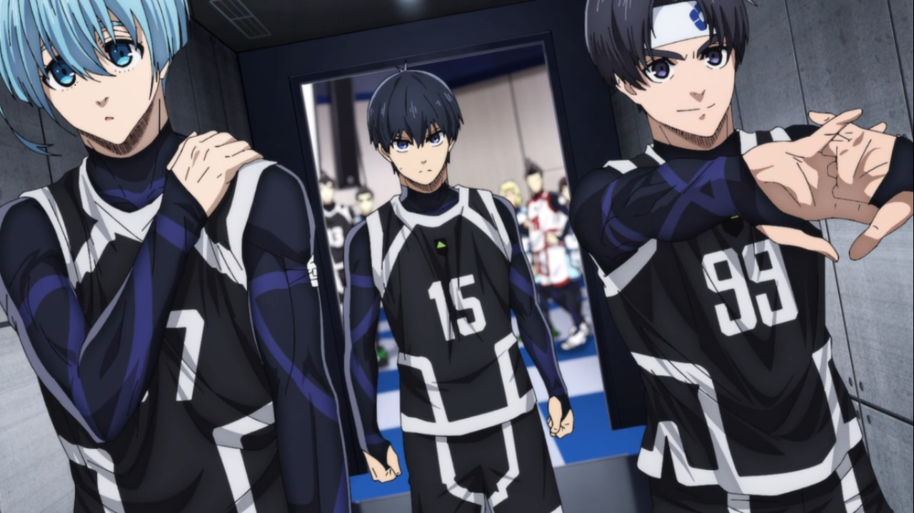

Resumen de los Mangas
Capitulo 1 - Pruebas
Los miembros de Blue Lock tienen que enfrentar a la selección Sub-20 de Japón. En preparación para ese trascendental partido, Ego decide hacer pruebas con los miembros restantes de Blue Lock a fin de encontrar la formación que se enfrente a Sae Itoshi.
Capitulo 2 - El asesino y el ninja
Van a empezar las pruebas entre los últimos miembros de Blue Lock. Isagi tiene ante sí la gran oportunidad de brillar junto a Rin, pero no parece que lo vaya a tener tan fácil con sus rivales, el partido del equipo A contra el B da inicio y parece que hay miembros del mismo equipo que no se llevaran tan bien.
Capitulo 3 -Un mundo de sensaciones
Mientras los egos de Shidou y Rin chocan y el equipo está contra las cuerdas, Isagi busca la oportunidad para destacarse él y a su vez lograr remontar el partidillo contra el equipo B pero al parecer el Ego de Shidou es indomable.
Capitulo 4 - Camaleón
Tras la conclusión del primer partido, Isagi evalúa cómo pudo meter ese golazo al final. Y por otra parte, Reo tiene la oportunidad de demostrarle a Nagi lo mucho que ha crecido en el tiempo que han estado separados asi sabiendo cual es su arma verdadera, el famoso Camaleón.
Capitulo 5 - Flujo
Después de los partidos, Ego se dispone a hacer el anuncio de los jugadores que formarán parte del equipo que jugará contra la selección Sub-20 de Japón, pero este ultimo pondrán una condición antes del partido.
Capitulo 6 - El gran escenario
Es el momento de la verdad. El partido entre los seleccionados de Blue Lock y la Sub-20 de Japón se dara inicio dentro de las instalaciones de Blue lock, Teniendo una formación estable y con una gran multitud ansiosa por Sae Itoshi, hermano de Rin Itoshi al parecer esta rivalidad de hermanos será el nucleo del partido, mediante el partido avanza conocen a Oliver Aiku y su gran arma.
Capitulo 7 - Sae Itoshi
Tras la gran jugada defensiva de Oliver Aiku, el sub-20 de Japón inicia el contraataque comandado por Sae Itoshi, que empieza a demostrar su habilidades, abusando de los regates el mismo se sobrara acudiendo a un rechace y marcando el primer gol para la Sub-20
Capitulo 8 - Genes azules
Tras el primer gol del equipo Blue lock Eleven El partido sigue en marcha, y el equipo lanza una nueva ofensiva encabezada por la improvisación de Rin Itoshi. Parece que todo va por buen camino, hasta que la sub-20 decide sacar su comodin.
Capitulo 9 - Nieve nocturna
Termina el primer tiempo del partido, ahora veremos el pasado de los hermanos Itoshi como se llegaron a amar el futbol y jugar juntos con lo cual hicieron una promesa, pero al parecer Sae tenia otros planes en mente, teniendo un conflicto que llego a cierto punto de odiarse entre si.
Capitulo 10 - Cambios
Comienza la segunda parte del fatídico partido. En la selección Sub-20 entra el comodin Shidou a quien Sae eligio para el encuentro siendo el Duo del Ángel y el demonio, lo que supondrá un gran cambio para el ritmo del partido y provocará que haya movimiento en la banca de Blue Lock, dando a este ultimo sus primeros cambios.
Capitulo 11 - Lo que nos enseñaste
Luego de que Isagi despertara y encontrara la ultima pieza dándole la victoria al Equipo Z y la primera derrota del Equipo V. Lo dieron todo y ganaron, asi la primera fase pasaron destruyendo rivales y a otros los han despertado, ahora el siguiente nivel los hara luchar solos asi que aquí se separan, pero no olvidaran que el Equipo Z es tremendo y... ¡Se verán del otro lado!
Capitulo 12 - Flor
En el segundo capítulo de la primera temporada de Blue Lock, Isagi Yoichi se enfrenta a Megurum Bachira en un partido de fútbol dentro del programa Blue Lock. Isagi intenta superar a Bachira, pero este último demuestra ser un oponente formidable, luego de eso da inicio el primer partido del Equipo Z.
Capitulo 13 - No estoy solop>
En el segundo capítulo de la primera temporada de Blue Lock, Isagi Yoichi se enfrenta a Megurum Bachira en un partido de fútbol dentro del programa Blue Lock. Isagi intenta superar a Bachira, pero este último demuestra ser un oponente formidable, luego de eso da inicio el primer partido del Equipo Z.
Capitulo 14 - Golpe de gracia
En el segundo capítulo de la primera temporada de Blue Lock, Isagi Yoichi se enfrenta a Megurum Bachira en un partido de fútbol dentro del programa Blue Lock. Isagi intenta superar a Bachira, pero este último demuestra ser un oponente formidable, luego de eso da inicio el primer partido del Equipo Z.